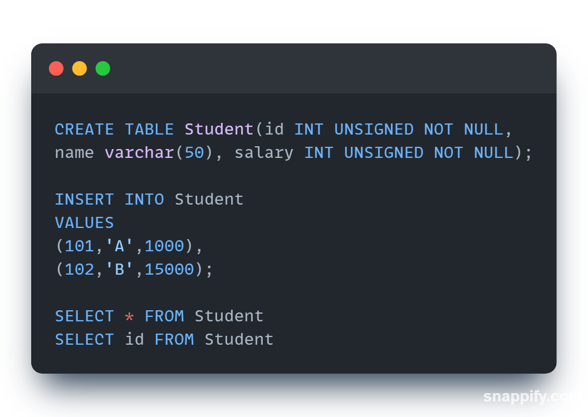
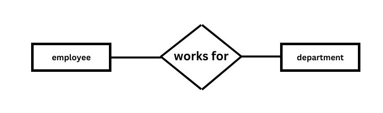

UNIT - I
Database Management System
Database: Database is a collection of related information in a systematic manner.
Example: A row of a list of roll number and name of a particular class.
A database is a general term for any useful collection of logically data whereas DBMS is a computer for a software specially design to maintain database.


DBMS Architecture
A DBMS is a way to centralized the storage and manage the data. The purpose of database is to provide the correct data to the correct user. The same set of data may be previewed differently by different user.
Internal/Physical Level:
This is the lowest level of abstraction and describe how the data are actually stored. The physical level complex of low level structure in detail.
Database schema and instance:
The overall set of relationship for the entire database is known as database schema. it includes tables, their constraints and relationship.
The collection of information stored in the database at the particular movement is called instance of the database.
Types of Database Language:
There are many types of database languages:
- DDL (Data Definition Language )
- DML (Data Manipulation Language )
- DCL (Data Control Language )
DDL:
DDL is used to define the conceptual schema of the database. It is a set of SQL command used to create modified and delete database structure.
They are generally used by the DBA ( Database administration ) .
The full SQL command scheme available in DDL.
- Create table
- Alter table
- Drop table
DML:
DML is a language that enable user to access manipulate data stored in the database. The DML provides command to select, retrieve, delete, modify the data.
The few SQL command available in DML:
- Insert data
- Modify data
- Delete data
- Retrieve data
DCL:
Through DCL we can control and access to data to the database. Sometimes DCL statement are grouped with DML statement.
Through DCL we can:
- Commit
- Roll back
- Grant
Architecture of DBMS
DDL Compiler:
The DDL statements are said the DDL compiler. Which converts these statements to set of table these table contains the meta data concerning the database and arg in the form that can be used by other components of the DBMS
DML Re Compiler and Query processor:
The DML pre-compiler converts the DML statement embedded in an application program to normal procedure cost in the whole language.
If the DML statement include the query than it goes to query processor which in traps the query and converts it into an efficient series of operation.
Data Manager:
Data Manager control the database it provides the interface between the database and the application program data manager convert the user request coming directly via the query processor or via application program to three physical file system.
The data manager is responsible for the instruction with the file manager or interpret and security enforcement and concurrency control.
File Manager:
File manager is responsible for allocation of space on the disk storage and the data structure used to represent information storage on physical media.
Data files:
These are actual physical file which contain the data.
Data Dictionary:
Is used to store the meta data about the structure of the database. It also keep track of relationship that exists between various data structure.
Database Modeling Concept
A DBMS is used store information regarding an organization institute, etc. In order to represent this information in some kind of mapping or modeling is required so that the things which can be happening in real world can be simulated and stored in a computer database and some popular data models are:
- Hierarchical Model
- Network Model
- Relational Model
Hierarchical Model:

The data is stored Hierarchically using a down tree. This model uses pointer to navigate between stored data. It was the first DBMS Model.
Network Model:
Like the hierarchical model, this model was pointer towards stored data. However it doesn't necessary use a downward tree structure.
Relational Model:
Data is stored in 2D form in rows and columns The data is manipulated based on the relational theory of mathematics. The data is organized in form of independent tables. A table consist of number of rows ( records of tuples ) and columns ( attributes )
Key
According to Edgar F. Codd a key has only one meaning, in relational theory. It is a set of one or more column whose combined values are unique from all concurrence. In a given table, a key is the relational means of specifying uniqueness.
A key is a collection of attribute that maybe used to identify retrieve one or more records.
Types of Keys
- Candidate Key
- Super Key
- Primary Key
- Alternate Key
- Foreign Key
- Composite Key

Candidate Key:
A candidate key is set of one row and columns. Whose combined values and unique among all occurrence. A candidate key is a key that can be used to uniquely identify a record. It may be used to retrieve one specific record so it becomes a primary key.
In simple words, a candidate key is an attribute which can be selected as primary key.
Note: All the keys are made from candidate key.
| ID | Name | Class | Branch |
|---|---|---|---|
| 1 | X | BCA | CS |
| 2 | Y | BCA | CS |
| 3 | Z | BCA | CS |
| 4 | A | BCA | CS |
Super Key:
A super key is a column or a set of columns. That uniquely identify a row within a table. The word 'super' denotes this superiority of a key, thus a super key is a super set of a key known as candidate key, it means a candidate key is obtained from super key only.
Primary Key:
A primary key in a table that uniquely identifies each row and column or set of columns in the table. The primary key is an attribute or a set of attributes that help to uniquely identify the tuples(records) in the relational table. The primary key provides the means to distinguish one tuple from all the others in the relation.
- Minimal: It is composed of a minimum number of attributes that satisfy the unique type of a record.
- Accessible: The Primary key is used to check the ability to access and interact with database.
- Not Null: It refers to a non null value.
| E.Id | E.Name | E.Section | E.Class |
|---|---|---|---|
| 1 | X | NULL | BCA |
| 2 | Y | A-1 | BCA |
| 3 | Z | B-3 | BCA |
Alternate Key:
An alternate is candidate key which is not selected to the primary key
Foreign Key:
Foreign Key is a column that refers to the primary key/unique key of another table. So it demonstrates the relationship between tables and acts as the cross reference among them. It establish relationships between tables and also ensure consistency and integrity of data. A foreign key is applied to a column of one table which references the primary key of a column in another table.
Compound Key:
A compound key ( also called composite key ) or ( concatenate key ) is a key that consist of two or more attributes
All types of key explained through this example:
Structured Query Language ( SQL )
SQL is a widely used database language providing of data manipulation and creation. Almost all model relational database management system like MSSQL Server, Microsoft Access, Oracle, DBQ all use SQL as Standard Database Language.
In 1970, Edgar F. Codd published the paper with the help of relational algebra and proved that we store the data and fetch the data. The first name of the SQL is Simple English Query Language.
SQL Syntax
Basic SQL Commands
'ALTER' Command
( ALTER is used when we have to manipulate the core database attributes. Meanwhile UPDATE is used to update the database records. )
Change in schema:
- Add column
- Remove column
- Modify column
- Rename column/table
- Add column:
ALTER TABLE Student ADD Address varchar(30); - Drop column:
ALTER TABLE emp DROP COLUMN Address - Modify:
ALTER TABLE emp MODIFY Id varchar(20); - Change column name:
ALTER TABLE emp RENAME COLUMN I - Change table name:
ALTER TABLE emp RENAME to emp1
Constraints in SQL
Constraints are the rules that we can apply on the type of data in a table. We can specify the limit on the type of data that can be stored in a particular column in a table using constraints.
Rule 1- Unique Constraints
The constraints specify with a column tells that all the values in the column must be unique.
Rule 2- Not Null
The primary key which refers not null value.
Rule 3- Check Constraints
This constraint helps to validate the values of a column to meet a particular condition i.e., it helps to ensure that the value stored in a column meet a specific condition.
'INSERT' Command
Syntax
INSERT INTO TABLE name VALUES(value1,value2, .... value n)
Example:
INSERT INTO emp(101,'Akbar',10000);
INSERT INTO emp VALUES(102,'Anthony',12000);
'DELETE' Command
A delete command is a DML command used to delete record from a table that is not required in the database. It removes the complete row from the table & produce that we need the delete permission on the target table to execute this command. It also allows us to filter & delete any specific records using the where clause from the table.
'UPDATE' Command
The update command is a DML command are used to modify the data that is already in the database. Update statement is used to change the data of the records held by the table.
'TRUNCATE' Command
The truncate command is a DDL command used to removes 'complete data' from the table without removing the table structure. We can't us the where clause with this command.
'SELECT' Command
The select statements is the most commonly used command in SQL. It is used to access the records from one or more database tables and view it, it also retrieve the selected data if that conditions are true.
SQL SELECT UNIQUE
Select unique is an old syntax which was used in oracle description but later ANSI standard defines distinct as an official keyword.
SQL SELECT DISTINCT
Select distinct is used with select keyword to retrieve only distinct or unique data.
SQL SELECT COUNT
The SQL count is a function that returns the no of records of the table.
SQL AND / OR
The SQL AND Condition is used to create two or more conditions.
The SQL OR Condition is used in SQL query to create a SQL statement where records are return when any one condition is matched.
Order By Clause
Whenever we sort the records based on the column store in the table of the SQL database, then we consider using the order by clause in SQL means that all the values stored in the column on which we are applying order by clause will be sorted & we corresponding column values will be displayed in the sequence in which we have obtain values in earlier table.
Using the order by clause we can sort the records in ascending/descending order by our requirements. The records will sorted in ascending order, the ASC keyword & descending order will be DESC keyword.
E-R Diagram [ Entity Relationship ]
E-R model is a high level data model. This model is used to define the data elements & relationship for a specified system. It develops a conceptual design for the database & simple & easy design view of data.
Component of E-R Diagram
Entity
An entity may be any object, class, person or place. In the ER diagram, an entity can be represented as rectangle
Attributes
The attributes is used to describe the property of an entity, eclipse is used to represent an attribute.
Relationship
A relationship is used to describe the relation between entities. A diamond is used to represent the relationship.
Types of Relationship
Onto One Relationship
When only one instant of an entity is associated with relationship. It is known as one to one relationship.
One to Many Relationship
When only one instance of entity on the left & more than one instance of entity on the right associated, the relationship with relationship. It is known as one to many relationship.

Many to One Relationship
When more than one instance of entity on the left & only one instance of entity on the right associates with the relationship then it is known as many to one relationship.

Many to Many Relationship
When more than one instance of entity on the left & more than one instance of entity on the right associated with relationship. It is known as many to many relationship.

Weak Entity
An entity set that doesn't processes sufficient attributes to form a primary key is called a weak entity set. A weak entity can't exit by itself & it depends on and identify entity set via an identified relationship set. An identified relationship is using a double diamond and a weak entity set is used to represent as double rectangle.